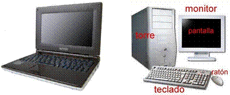
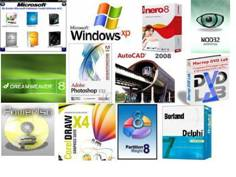

EL ORDENADOR
Un ordenador es una máquina programable. Las dos características principales de un ordenador son:

Puede ejecutar una lista de instrucciones pregrabadas (un programa).En resumen a la televisión se la denomina la caja tonta, al ordenador se le puede decir que es el tonto rápido, ya que por si solo no es capaz de hacer nada, pero si le damos las instrucciones necesarias para realizar una tarea, esta la desarrolla muy rápidamente.
Hay que tener en cuenta una cosa y es que el ordenador jamás se equivoca, si le mandamos hacer algo y no lo hace, o lo realiza de una forma incorrecta, la culpa jamás es suya, la culpa siempre es del que le ha dado la orden, ya que seguro que no se le han dado las instrucciones de forma correcta.
Diremos que el ordenador consta en esencia de dos partes: el llamado "Hardware" y el "Software" dos palabras inglesas.

El Software es el conjunto de programas que están instalados en él, unos son indispensables (como el sistema operativo del que ya hablaremos) y otros son necesarios solo para ciertas tareas (por ejemplo Word para procesar textos, Excel para manejar hojas de cálculo, etcétera).Tan importante es el hardware como el software, para el perfecto funcionamiento de nuestro ordenador, pero hay que tener en cuenta de que resulta mas fácil actualizar, el software que el hardware, ya que si queremos realizar un trabajo, si un programa no nos vale lo borramos instalamos otro y punto, pero si no nos vale la tarjeta grafica para el trabajo, tendremos mas problemas para poderla sustituir, ya que por ejemplo es posible que la placa base no sea compatible, o las salidas de video no sean las adecuadas para nuestros periféricos, así que a la hora de comprar un ordenador debemos de fijarnos mas en el hardware que en el software “programas que nos vienen instalados de fabrica que los pagamos y que algunos no los utilizaremos nunca” .